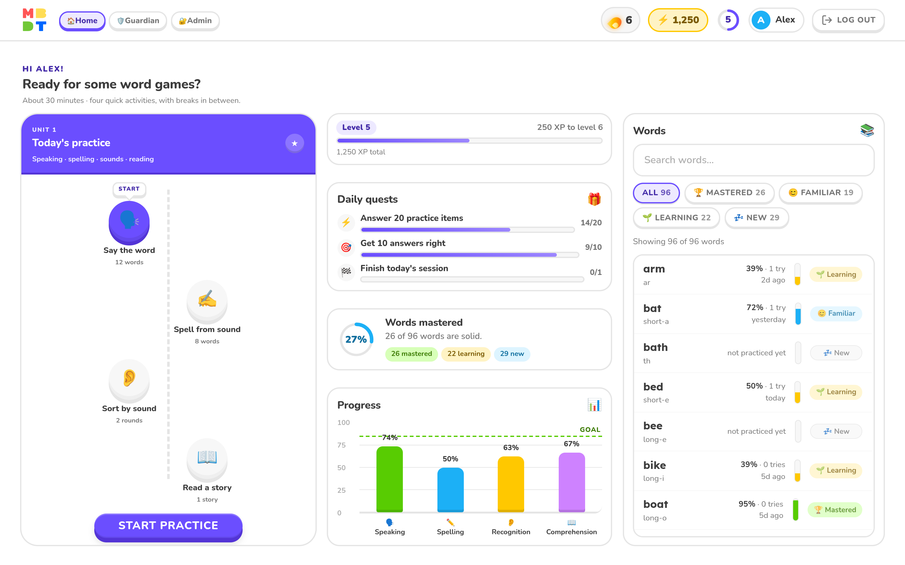
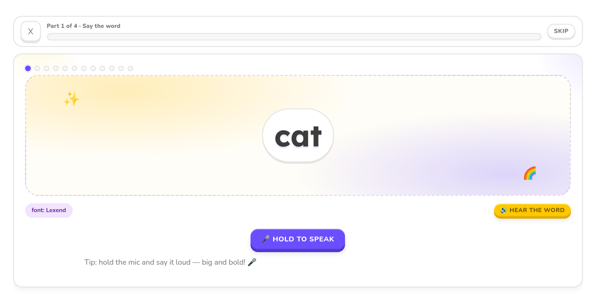
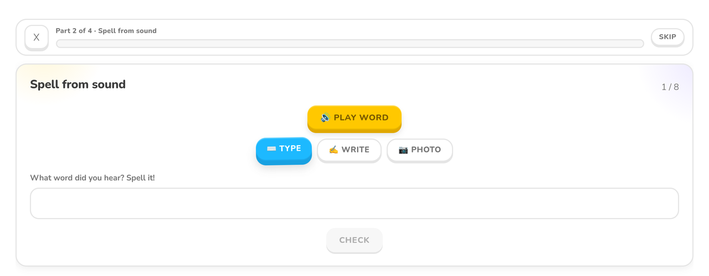
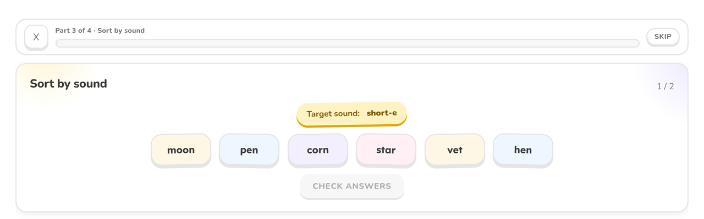
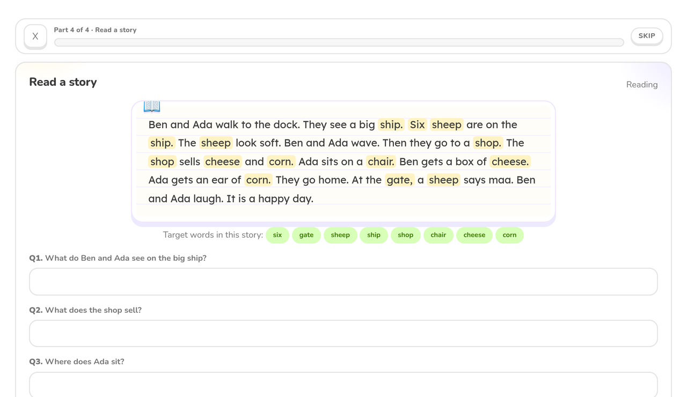
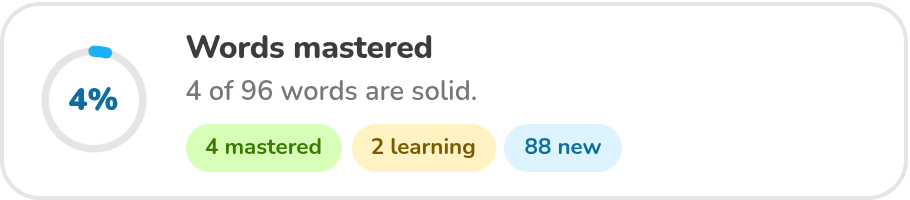
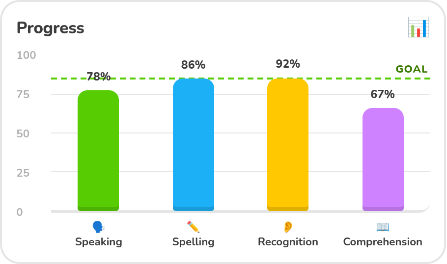
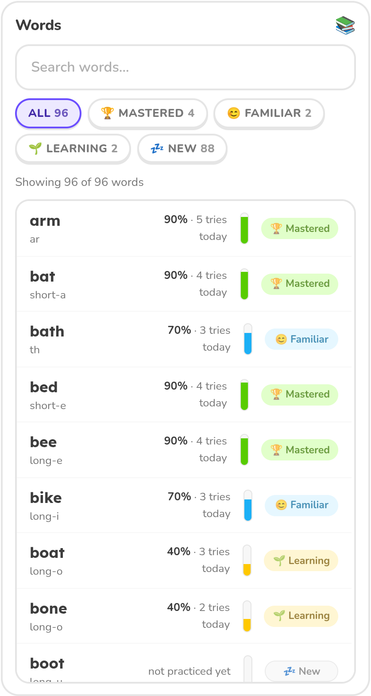

Targets the Weak Spots
Every response is recorded locally and processed by an algorithm that identifies fragile words. Adaptive repetition brings weaknesses back sooner and lets mastered words fade.
Self-Hosted
MBDT turns Orton-Gillingham style literacy exercises into short, playful sessions. A specialized algorithm targets each learner’s weakest words, fonts and sounds.
MIT License

Why we made this
Traditional literacy practice can be boring and non-adaptive. We digitized it and added personalization, so the exercises stay familiar while the content adapts.
Every response is recorded locally and processed by an algorithm that identifies fragile words. Adaptive repetition brings weaknesses back sooner and lets mastered words fade.
A wrong answer is not a penalty. Uncertain answers adjust the next round only slightly, so one shaky attempt never erases progress.
Names, reviews and settings stay in one local file. The guardian chooses the word set and story interests; the admin configures the AI provider and models. Only the specific word, audio clip, image or prompt a feature needs is sent.
What a session looks like
Four short activities, with short breaks between them.
Click an activity to preview it.




For parents and guardians
The home screen shows progress panels for grown-ups: words mastered, an ability chart, and a searchable word list with mastery, attempts and last practice. Guardians can review the record, change the word set, set story interests and choose topics to avoid; the admin configures the AI provider and models.



Privacy and control
Names, attempts, scores and guardian settings live in one SQLite file you control. The guardian chooses the word set and story interests; the admin controls the AI provider. You decide which features to use, and only the specific word, clip, image or prompt a feature needs is sent.
One SQLite file you can copy or delete.
No names, history or identifiers are attached.
Retention is a provider and gateway policy, not something this app can guarantee. Requesty and OpenRouter both offer zero-data-retention routing for participating models; if you change the gateway, model ids or account settings, check their terms first. Story output also passes a keyword safety filter.
Get the source
MBDT runs on your own machine. The GitHub repository has the full source, the step-by-step setup guide, model and key configuration, and the issue tracker.
No MBDT account, no cloud sync and no analytics. You only need an API key from Requesty or OpenRouter for the speech, handwriting and story features.
Open the GitHub pageWord-list sources and licences are documented in the repository.
Run it locally, read the code, or open an issue. The README covers every platform.
MBDT is supplementary reading and spelling practice. It does not diagnose, treat, cure or prevent dyslexia or any other condition, and no educational, health or other outcome is claimed or guaranteed. It is not a substitute for assessment or intervention by a qualified teacher, educational psychologist, speech-language therapist or doctor. If you are concerned about a child's reading, seek professional advice.
Exercises are AI-assisted, so generated stories or transcriptions may be wrong or surprising; a parent or guardian should supervise use. Word lists come from general-purpose phonics and sight-word sources and are not individually clinically validated. The software is provided “as is”, without warranty of any kind, under the MIT License.